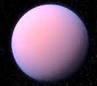

The Milky Way
Scroll down to learn more about our galaxy.
Stars

Stars are balls of plasma held together by gravity. One star that you might be
familiar with is our Sun, which is the only star in our solar system as well as the
closest one to us. Stars develop from clouds of hydrogen and helium, as the clouds
collapse inward due to gravity. The clouds become hotter and denser, and atomic nuclei
begin to fuse together. This ignites the star and begins its life.
Stars have a very specific life cycle, decided by their initial mass. Stars with a
larger mass often have a shorter life span, while stars with too small a mass fail
to become a star altogether. When stars are born, they start to use up their hydrogen
as fuel. As they use up their fuel, stars enter the next stage of their life cycle, going
from red giant to white dwarf to black dwarf. At that point, the star is too faint to detect.
Our Sun is still in the beginning stage of its life cycle where it still has fuel to burn.
In about 5 billion years, our Sun will begin its transformation and go through the different
stages. Stars like our Sun are actually what we see in the night sky, and there are
hundreds of billions of stars in the Milky Way alone.
Learn more about stars at the Space.com website.
Go back to the Explore page.
Or, scroll up or down to learn about other bodies in space.
Exoplanets

There are more planets than stars in our galaxy, and nearly all of them are outside of
our solar system. Many of these planets are probably small, similar to size in Earth,
and some could even be habitable. Over 4000 exoplanets have been discovered in the past
few decades, but there are likely trillions out there.
Much like in our solar system, exoplanets have a large variety of types, shapes, and
orbits. Many of these exoplanets were discovered by the Kepler space telescope, like
Kepler-51 D pictured above. These exoplanets surprised many scientists in the 1980s,
as many of them are very different from the planets in our solar system. For example,
51 Pegasi B, discovered in 1995, a planet with the mass of Jupiter that was 20 times
closer to its sun than the Earth is to ours.
Ever since the discovery of exoplanets, many space agencies have been looking for a planet
just like Earth. Specifically, one in the "habitable zone" of its sun, which is the distance
from a sun where the temperature allows for liquid oceans. This was critical for life on Earth,
and naturally, us humans want to see if there's any other life out there.
Learn more about exoplanets at the Space.com website.
Go back to the Explore page.
Or, scroll up or down to learn about other bodies in space.
White Dwarfs

White dwarfs are one of the parts of the life cycle of a star. As stars burn their
hydrogen fuel, it's inevitable that they eventually run out. When that happens, the
"corpse" of the star becomes a white dwarf. Not all stars do this; only stars with low
or medium masses, like our sun, become white dwarfs. In fact, it's only 3% of stars that
won't become a white dwarf in the future.
Despite being much smaller than a normal star, white dwarfs can reach temperatures of
more than 99,704 C. Because of their small size, though, they aren't very bright. They have
the mass of a sun, but they have a radius similar to the Earth. This makes them some of the
densest objects in space, and they have gravity 300,000 times the gravity on Earth.
A majority of white dwarfs eventually fade away, when all of their energy radiates into
space and they are no longer able to be detected. At that point, they're referred to
as "black dwarfs". Some white dwarfs, though, pull in extra mass and become neutron stars
or even a supernova or nova explosion.
Learn more about white dwarfs at the Space.com website
Go back to the Explore page.
Or, scroll up or down to learn about other bodies in space.
Neutron Stars

Stars with large masses will sometimes explode in a supernova. When this happens,
the outer layers can blow off and leave behind the core of the star. This core
continues to collapse, as gravity pushes together protons and electrons to make
neutrons. This is why neutron stars got their name. Neutron stars are extremely dense,
with radiuses of just 10 kilometers and masses around 2.78e30 kg.
Neutron stars also have extremely high gravity - 2 BILLION times the gravity of the
Earth. They also spin extremely fast from the power of the supernova, about 716 times a second,
slowing down over time. Neutron stars can also orbit each other, just like regular stars. When
this happens and they are close enough, they can spiral closer until they crash. This creates
an intense explosion called a "kilonova".
One of these kilonovas occured in 2017, where researchers discovered that these explosions
produced gold, platinum, and other elements. However, no one really knows what happened to
the neutron stars afterwards - whether it created something known, like a black hole or a
new neutron star, or something brand new.
Learn more about neutron stars at the Space.com website.
Go back to the Explore page.
Or, scroll up or down to learn about other bodies in space.
Black Holes

Black holes have extremely strong gravitational attraction. In fact, it's
so strong that light can't even escape it. They have three parts, or layers:
the singularity, the outer event horizon, and the inner event horizon. The
event horizon is the point of no return, where once a particle crosses, it
can never leave. The gravitational force is constant across the event horizon.
The singularity is in the inner region of the black hole, where the mass of the
black hole is the most concentrated. Black holes are incredibly dense as well as
incredibly destructive. A black hole can even tear apart a star if the star drifts
into it. One common misconception about black holes is that they suck in and destroy
everything. However, black holes actually don't suck things in like a vacuum. Objects
are simply pulled toward it just like any other object with gravitational force.
Black holes can't be seen like other objects in space, like stars or planets. They
are detected by the radiation they release as objects are pulled in. Recently, though,
an image of a black hole was taken after an incredible amount of work, research, and
data. There's no doubt that this will greatly increase our understanding of black holes.
Learn more about black holes at the Space.com website.
Go back to the Explore page.
Or, scroll up or down to learn about other bodies in space.
Red Dwarfs

Red dwarfs are the most common kind of star in our galaxy, but they don't produce enough
light to be seen by the naked eye from Earth.Because they don't produce much light, though,
they don't use up as much energy as other stars and therefore have a longer lifespan. They
form just like any other star, when a cloud of dust and gas is drawn together by gravity and
fuses. However, red dwarfs are the smallest of the stars and reach a much lower temperature
of 3,500 C. The lifespan of a red dwarf can be trillions of years.
Though they live much longer, they don't live forever. Just like a normal star, red dwarfs
eventually run out of fuel and collapse into a white dwarf. Red dwarfs have also been found
to have planets orbiting around them, though gas giants like Jupiter are rare.
Red dwarfs only weigh between 7.5% to 50% as much as our Sun, with masses from 1.6e29 to 9.9e29 kg.
They are also different from normal stars because they burn all of their hydrogen, not just the
hydrogen in their cores. Despite their low light and temperature, potentially habitable
exoplanets have been found orbiting around red planets, such as a planet found in 2016 orbiting
Proxima Centauri, the nearest star to the Sun.
Learn more about red dwarfs at the Space.com website.
Go back to the Explore page.
Or, scroll up or down to learn about other bodies in space.